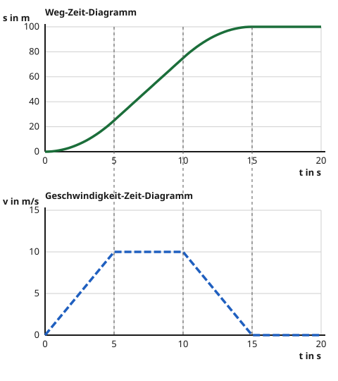

Beide Diagramme zusammen
Mit einem KI-Tutor lernen
Ein KI-Tutor erklärt dir diese Seite und hilft dir bei den Übungen. Wähl deinen Assistenten:
Mit Claude öffnen Mit ChatGPT öffnen Mit Mistral Vibe öffnen
Du nutzt dein eigenes Konto beim Anbieter. Der Assistent ist kein Angebot von lernapps.net: lernapps liefert nur Inhalte und Übungen. Die Wahl gilt für alle Seiten, nur auf diesem Gerät.
Einstieg - Eine Fahrt, zwei Bilder
Auf den letzten Seiten hast du zwei Diagramme gelesen. Das Weg-Zeit-Diagramm zeigt, wo ein Rad zu welcher Zeit ist. Das Geschwindigkeit-Zeit-Diagramm zeigt, wie schnell es ist. Beide zeigen dieselbe Fahrt, nur anders. Jetzt lernst du, sie zusammenzulesen.
Anschaulich erklärt - dieselbe Fahrt in zwei Diagrammen
Das Bild zeigt eine Radfahrt in vier Abschnitten zu je 5 Sekunden. Oben steht das Weg-Zeit-Diagramm, unten das Geschwindigkeit-Zeit-Diagramm, mit derselben Zeitachse. Die gestrichelten senkrechten Linien gehen durch beide Diagramme und trennen die Abschnitte. So kannst du jeden Abschnitt oben und unten vergleichen.

- Abschnitt 1 (0 bis 5 s): Unten steigt die Tempo-Linie, das Rad wird schneller. Oben wird die Weg-Linie immer steiler.
- Abschnitt 2 (5 bis 10 s): Unten ist die Linie waagerecht über der Null, das Tempo bleibt gleich. Oben ist die Weg-Linie gerade und schräg.
- Abschnitt 3 (10 bis 15 s): Unten fällt die Tempo-Linie, das Rad bremst. Oben wird die Weg-Linie immer flacher.
- Abschnitt 4 (15 bis 20 s): Unten liegt die Linie auf der Null, das Rad steht. Oben ist die Weg-Linie waagerecht.
Eine Radfahrt. Die Zahlen 1 bis 4 stehen unter dem Abschnitt, um den es geht.
Quelle: eigene Zeichnung. Lizenz: CC-BY-4.0.Die Neigung der Weg-Linie oben und die Höhe der Tempo-Linie unten gehören zusammen. Wo oben die Linie steil ist, ist unten die Linie hoch. Wo oben die Linie waagerecht liegt, liegt unten die Linie auf der Null. Und wo unten die Linie steigt, wird oben die Weg-Linie steiler.
Die Linien sehen verschieden aus, obwohl es dieselbe Fahrt ist
Eine waagerechte Linie oben heißt Stillstand. Eine waagerechte Linie unten heißt nur: gleichbleibendes Tempo. Stillstand ist unten nur die Linie auf der Null. Schau darum immer auf die Achse, zu der die Linie gehört.
Ausprobieren im Bewegungslabor
Das Labor zeigt jetzt beide Diagramme untereinander. Du startest mit 10 m/s und stellst das Tempo am Ende jedes Abschnitts ein. Beide Diagramme ändern sich gleichzeitig, die Skalen bleiben fest.
Probiere der Reihe nach aus:
- Stelle Abschnitt 1 auf 20 m/s. Wie sehen die Linien in Abschnitt 1 oben und unten aus?
- Drücke auf "Zurücksetzen". Stelle Abschnitt 2 auf 0 m/s und Abschnitt 3 auf 0 m/s. Was zeigen beide Diagramme in Abschnitt 3?
- Drücke auf "Zurücksetzen". Setze bei Abschnitt 3 den Haken "rückwärts". Welches Diagramm ändert sich, welches nicht? Warum?
Abschnitt 1 (0 bis 5 s)
Du bleibst bei 10 m/s.
Abschnitt 2 (5 bis 10 s)
Du bleibst bei 10 m/s.
Abschnitt 3 (10 bis 15 s)
Du bleibst bei 10 m/s.
Abschnitt 4 (15 bis 20 s)
Du bleibst bei 10 m/s.
Das Bewegungslabor zeigt eine Fahrt von 20 Sekunden in vier Abschnitten. Zu Beginn fährst du mit 10 m/s gleichmäßig: Das Weg-Zeit-Diagramm ist eine gerade, schräge Linie bis 200 Meter, das Geschwindigkeit-Zeit-Diagramm eine waagerechte Linie bei 10 m/s. Mit JavaScript stellst du für jeden Abschnitt das Tempo am Ende ein und siehst beide Linien sich ändern.
Beispiel - Tempo aus dem Weg-Zeit-Diagramm prüfen
Abschnitt 2 der Radfahrt
Unten ist die Tempo-Linie in Abschnitt 2 waagerecht bei 10 m/s. Oben steigt die Weg-Linie in diesem Abschnitt von 25 m auf 75 m, das sind 50 m in 5 s. Mit stimmt das mit der Tempo-Linie überein. Die Neigung oben und die Höhe unten erzählen dasselbe.
Übung
Übung
Lösung
Diagramm A richtige Antwort
Die Linie wird immer steiler. In derselben Zeit kommt der Roller immer weiter, sein Tempo wächst.
Diagramm B
Die Linie ist gerade. Sie hat überall dieselbe Neigung, das Tempo bleibt also gleich.
Diagramm C
Die Linie wird immer flacher. In derselben Zeit kommt der Roller immer weniger weit, er wird langsamer.
Schneller werden heißt: in jeder Sekunde mehr Weg. Die Weg-Linie wird dann immer steiler.
Mehr dazu:
Übung
Lösung
Diagramm A
Die Linie ist waagerecht. Das Tempo bleibt gleich.
Diagramm B richtige Antwort
Die Linie fällt von einem hohen zu einem niedrigen Wert. Das Tempo sinkt, das Rad wird langsamer.
Diagramm C
Die Linie steigt. Das Tempo wird größer, das Rad beschleunigt.
Das Tempo ist die Höhe der Linie. Wer langsamer wird, hat eine fallende Linie.
Mehr dazu:
Übung
Lösung
Richtige Antwort: Die Weg-Linie liegt waagerecht. – Die Tempo-Linie liegt auf der Null.; Die Weg-Linie wird immer steiler. – Die Tempo-Linie steigt.; Die Weg-Linie ist gerade und schräg. – Die Tempo-Linie ist waagerecht über der Null.; Die Weg-Linie wird immer flacher. – Die Tempo-Linie fällt.
Die Steilheit der Weg-Linie ist das Tempo. Liegt sie waagerecht, ist das Tempo null. Wird sie steiler, steigt das Tempo. Bleibt sie gleich steil, bleibt das Tempo gleich. Wird sie flacher, sinkt das Tempo.
Mehr dazu:
Aufgabe Nr. 1
Aufgabe Nr. 1
Stelle die Fahrt so ein, dass sie zur Geschichte passt. Abschnitt 1: Du wirst schneller. Abschnitt 2: Du bleibst gleich schnell. Abschnitt 3 und 4: Du wirst langsamer.
Lösung
Abschnitt 1: schneller; Abschnitt 2: gleichbleibend; Abschnitt 3: langsamer; Abschnitt 4: langsamer